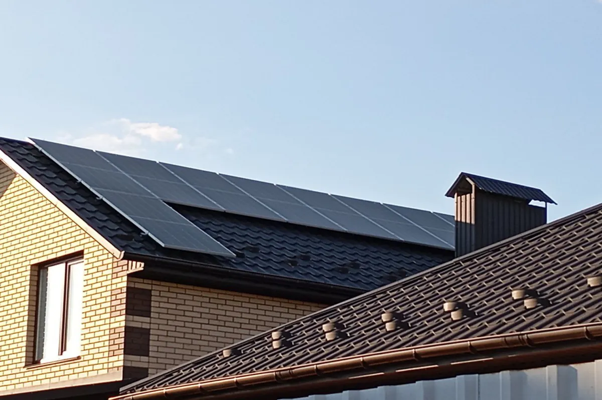
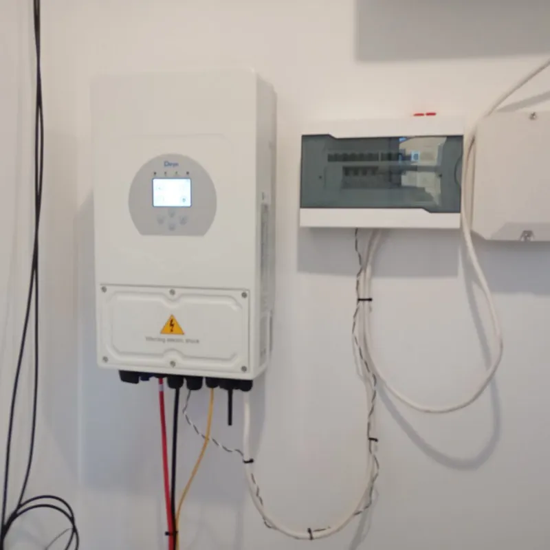
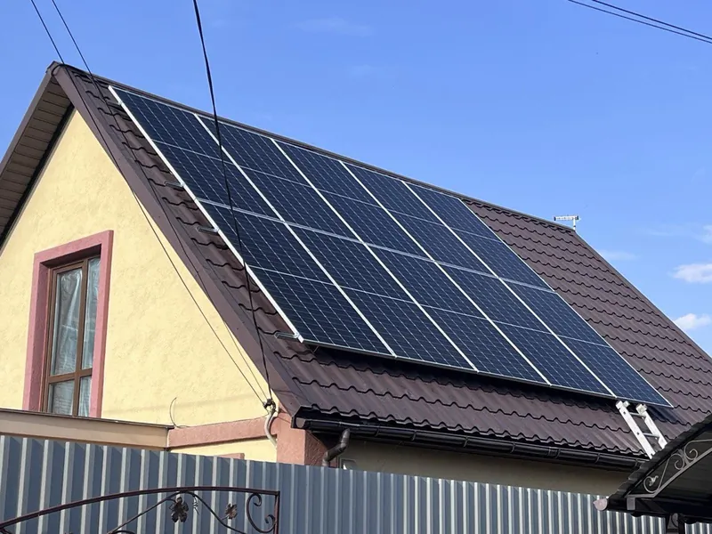
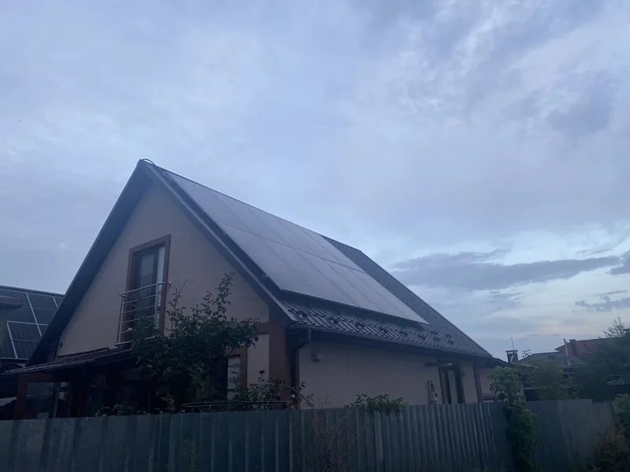
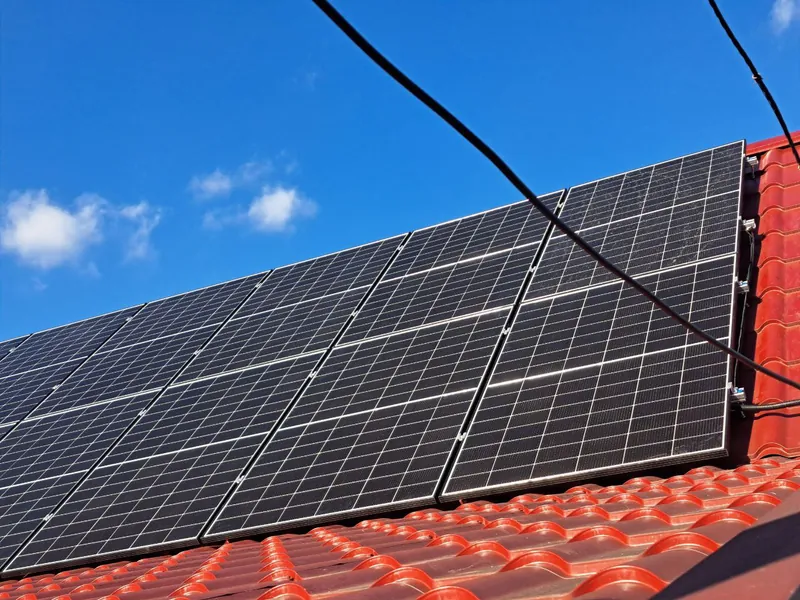
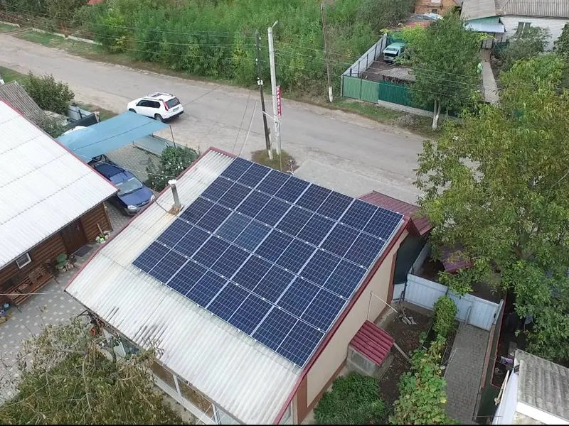

ГоловнаДля дому
Світло вдома, навіть коли за вікном графік
Гібридна сонячна станція з акумулятором для приватного будинку у Вінницькій області
12 годин без світла: котел, холодильник та інтернет вимикаються разом із мережею.
| Години | Без станції | Зі станцією |
|---|---|---|
| 02:00–06:00 | без світла | акумулятор |
| 10:00–14:00 | без світла | сонячні панелі |
| 18:00–22:00 | без світла | акумулятор |
| решта годин | мережа | мережа і сонце |
Приклад графіка, ілюстративно: три відключення по 4 години. Скільки годин протримає ваша станція, залежить від ємності акумулятора й того, що ви на нього підключите.
Що має працювати, коли мережі немає
Позначте прилади. Порахуємо, скільки енергії треба на два нічні відключення з прикладу вище (8 годин) і який акумулятор узяти за орієнтир.
Енергія на 8 нічних годин відключень
≈ 2,5 кВт·год
Орієнтир ємності акумулятора · приклад
від 5 кВт·год
Орієнтовно: середня потужність кожного приладу × 8 нічних годин (кожен прилад, зокрема бойлер, рахуємо увімкненим усі 8 годин), плюс запас 25% з округленням угору до кроку 5 кВт·год. Денні відключення закривають панелі, якщо світить сонце. Точну схему й ємність інженер підбере після огляду.
Надіслати цей набір інженеруЯк це виглядає на даху

- Потужність
- 6 кВт
- Де
- Вінницька область
- Рік
- 2024
- Монтаж
- 1 тиждень





Від дзвінка до світла в будинку
- 01Виїздогляд даху, щитка й місця для інвертора
- 02Проєктпотужність, ємність АКБ, що буде на резерві
- 03Постачанняпанелі, інвертор, акумулятор на об'єкт
- 04Монтажблизько тижня для 6 кВт
- 05Запускналаштування, документи, обленерго
Питання власників будинків
Чи буде світло, коли вимкнуть мережу?
Так, якщо станція гібридна з акумулятором. Мережева станція без акумулятора під час відключення зупиняється: інвертор вимикається з міркувань безпеки, щоб не подавати струм у лінію. Тому для резерву ставимо гібридний інвертор і акумулятор.
Скільки годин протримає акумулятор?
Залежить від ємності й навантаження. Холодильник, котел, роутер і світло разом споживають у середньому близько 0,3 кВт, тому 5 кВт·год вистачить приблизно на 12–15 годин. Бойлер чи насос скорочують цей час у рази. Порахуйте свій набір у блоці вище.
Що робити з документами й обленерго?
Оформлення беремо на себе: технічні умови, договір з обленерго, підключення до мережі. Від вас потрібні підпис і документи на будинок.
Скільки триває монтаж?
Станцію 6 кВт на даху будинку у Вінницькій області ми змонтували за тиждень. Точний термін залежить від даху, щитка й наявності обладнання, його назвемо після виїзду.
Що з обслуговуванням після запуску?
Оглядаємо станцію, чистимо панелі, налаштовуємо інвертор, ремонтуємо й консультуємо щодо експлуатації.
Розрахунок для вашого будинку
Інженер передзвонить у робочий час, 09:00–18:00, з попереднім розрахунком потужності й ємності акумулятора.